A Corquímica é fabricante, em Estância Velha (RS), de vernizes UV (Base e Top Coat), lacas, tintas para ABS e PS, tintas para piso, corantes UV, resinas 3D, solventes e desengraxantes.
Cada cliente recebe uma formulação ajustada à peça, ao material e ao processo, e a equipe presta apoio técnico dentro da fábrica.
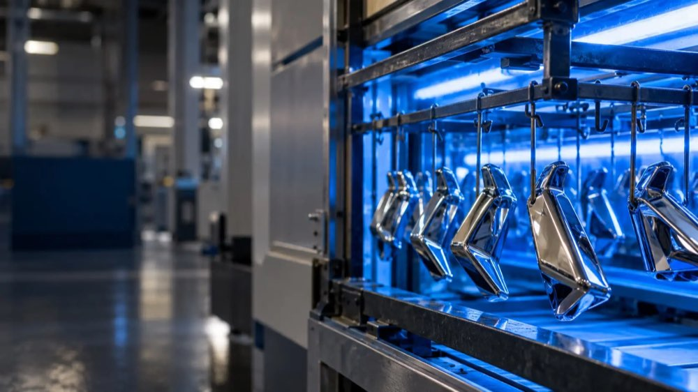
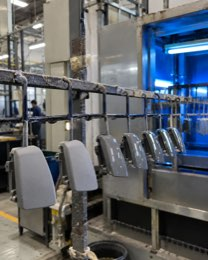
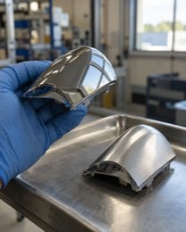
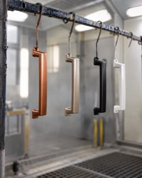
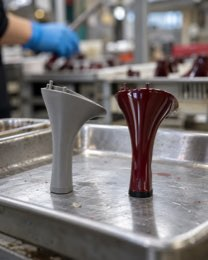
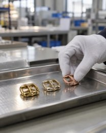
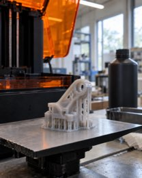
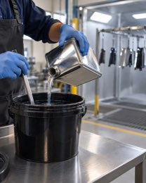
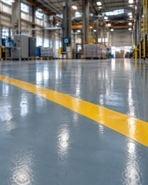
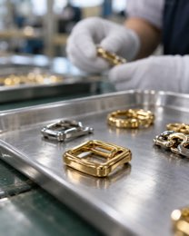
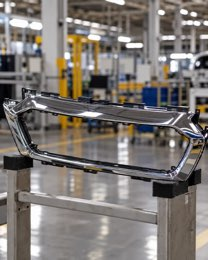
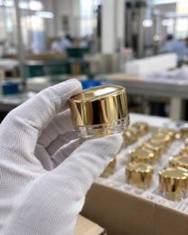
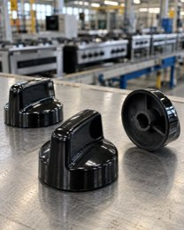
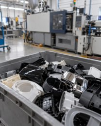